ENGINEERING BLOG / CHAPTER 10 OF 10
Evaluation and the Road Ahead
10.1 — What Does “Evaluating an LLM” Even Mean?
Before writing a single formula, we need to fix what we’re even measuring, because “evaluate the LLM” is dangerously ambiguous. It could mean:
- System-level metrics: latency, cost per token, uptime, throughput. Important for production, but not what this chapter is about.
- Output-quality metrics: is this specific response to this specific prompt good? Along which dimension — coherence? factuality? safety? helpfulness?
This chapter is entirely about the second bucket: quantifying the quality of a given LLM output.
This is a genuinely hard problem, for a reason that’s easy to lose sight of: the LLM is a text-to-text model. Its output space is not a fixed set of classes like in classical ML (cat vs. dog, spam vs. not-spam). It can be a poem, a proof, a piece of Python, a summary, a refusal, or a joke. There is no single universal yardstick that works for all of these simultaneously — which is exactly why this chapter builds up several families of evaluation techniques, each suited to different situations, rather than one master formula.
"Evaluate my LLM"
│
┌───────────────┴───────────────┐
│ │
System metrics Output-quality metrics ◄── this chapter
(latency, cost, uptime) │
┌───────────────┼────────────────┐
│ │ │
Human raters Rule-based metrics LLM-as-a-Judge
(Part I) (Part II) (Part III)10.2 — Part I — Human Evaluation and Inter-Rater Agreement
The Ideal (and Impractical) Baseline: Humans Rate Everything
If you could do anything you wanted, with infinite budget, the gold-standard evaluation loop looks like this:
prompt ──► LLM ──► response ──► human rater ──► score
│
▼
repeat thousands of times,
aggregate scoresThis is “ideal” because a human reading a response is about as close as you can get to ground truth on “was this a good response.” The problem is not accuracy — it’s practicality. Every single output needs a fresh human judgment. If you iterate on your model daily (change a prompt, fine-tune a checkpoint, swap a base model), you’re re-paying this human cost every single time. That’s the second limitation we’ll get to in “The Verdict on Human Evaluation” (Section 10.2) — it’s slow and expensive. But there’s a first limitation that shows up before you even worry about cost: humans don’t always agree with each other.
Why Human Judgments Disagree: Subjectivity
Consider the running example: a user asks “what birthday gift should I get?” and the LLM responds “a teddy bear is almost always a sweet gift — just pick one that feels right for you.” Now ask two different raters: is this response useful?
- Rater A: “Yes — a teddy bear is a perfectly reasonable, safe suggestion.”
- Rater B: “No — it never says which teddy bear, what size, what color. Too vague to act on.”
Neither rater is “wrong.” The rating task itself is fuzzy, because “usefulness” wasn’t pinned down precisely enough before the raters started working. This is a calibration problem, not a competence problem, and it means that before you can trust human labels at all, you need to measure how consistent your human raters are with each other — this is inter-rater agreement (also called inter-annotator agreement).
Quantifying Agreement: From Raw Agreement Rate to Cohen’s Kappa
The naive metric: raw agreement rate
Suppose two raters, Alice and Bob, each independently label a batch of responses as good (1) or not good (0). The simplest thing you could measure is the agreement rate:
This sounds reasonable, but it has a serious flaw: it doesn’t account for agreement that would happen purely by chance.
Deriving the chance-agreement baseline
Suppose Alice labels an item “good” with probability (and “not good” with probability ), completely independently of the actual quality of the response — i.e., she’s rating randomly. Same for Bob, with probability . Then Alice and Bob agree in exactly two disjoint scenarios: both say “good,” or both say “not good.” Since their choices are independent:
Worked numerical example. Let (both raters are, in effect, flipping a fair coin):
So two raters who are rating completely at random will still “agree” 50% of the time, purely by chance! This is the crucial insight: raw agreement rate is not interpretable on its own — a raw agreement rate of, say, 70% sounds great until you realize the chance baseline for that particular pair of raters might already be 60%, in which case 70% is only a modest improvement over noise. And notice from the formula: the higher and are (i.e., the more skewed the rating distribution — e.g., if 90% of responses get rated “good”), the higher the chance-agreement baseline climbs, even with zero real signal.
Cohen’s Kappa: agreement relative to chance
To fix this, Cohen’s Kappa () rescales the observed agreement relative to the chance baseline:
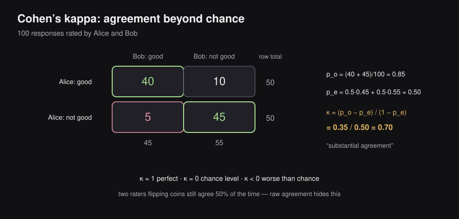
where:
- = observed agreement rate (what you actually measured)
- = expected agreement rate under pure chance (computed the same way as the derivation above, using each rater’s empirical marginal label distribution)
Interpreting :
κ = 1 → perfect agreement (p_o = 1)
κ = 0 → agreement is exactly what you'd expect by chance
κ < 0 → agreement is WORSE than chance (raters are anti-correlated!)
0 < κ < 1 → agreement better than chance, scaled by how much betterWorked numerical example. Suppose Alice and Bob rate 100 responses. They observe:
| Bob: good | Bob: not good | Row total | |
|---|---|---|---|
| Alice: good | 40 | 10 | 50 |
| Alice: not good | 5 | 45 | 50 |
| Column total | 45 | 55 | 100 |
- Observed agreement:
- Alice’s marginal rate of “good”: . Bob’s marginal rate of “good”: .
- Expected agreement by chance:
A of 0.7 is generally considered “substantial agreement” in the annotation literature — a much more informative number than the raw 85% figure, because it tells you how much of that 85% is real signal versus what you’d expect from two coins that happen to land on “good” about half the time.
Beyond Two Raters: Fleiss’ Kappa and Krippendorff’s Alpha
Cohen’s Kappa is specifically built for two raters on categorical labels. In practice you’ll often have more than two raters, or ordinal/continuous scales, or missing labels (not every rater rates every item). This is why the literature has extensions:
| Metric | Handles | Notes |
|---|---|---|
| Cohen’s Kappa | 2 raters, categorical | The baseline case derived above |
| Fleiss’ Kappa | >2 raters, categorical | Generalizes the chance-correction idea to multiple raters |
| Krippendorff’s Alpha | Any number of raters, any measurement scale (nominal, ordinal, interval), missing data | The most general — used when your annotation setup doesn’t fit neatly into the first two |
Remark: the exact generalized formulas for Fleiss’ Kappa and Krippendorff’s Alpha are not derived here — the key takeaway is the shared principle (correct for chance agreement), not the individual formulas.
In practice, teams track one of these metrics as a health metric. If it drops below a threshold, they run “calibration sessions” — meetings where raters discuss disagreements and align on interpretation of the grading rubric — before continuing to collect labels.
The Verdict on Human Evaluation
To summarize the two limitations of the “ask a human every time” ideal:
- Subjectivity — mitigated (not eliminated) via inter-rater agreement metrics and calibration sessions (Section 10.2).
- Cost and speed — rating a thousand outputs takes a long time and money, and you’d need to redo it every time your model changes.
This motivates the next two parts: can we replace the human in the loop with something automatic, either a formula (Part II) or another model (Part III)?
10.3 — Part II — Rule-Based Reference Metrics
From Humans-in-the-Loop to Humans-Wrote-the-Reference
Here’s the key reframing: instead of asking a human to rate every LLM output, ask a human to write a reference (an ideal/gold-standard answer) for a fixed set of prompts, once. Then, every time your model changes, you compare its new output against that same fixed reference using an automatic formula.
OLD: prompt ──► LLM ──► response ──► human rates response (repeat every iteration)
NEW: prompt ──► human writes reference (do this ONCE)
prompt ──► LLM ──► response ──► compare(response, reference) via FORMULA
(repeat cheaply, forever)This is strictly cheaper going forward, but it introduces a new design problem: natural language is not unique. The same meaning can be phrased in many different ways, so any comparison formula needs to tolerate stylistic variation while still penalizing actual differences in meaning. This is exactly the design tension that METEOR, BLEU, and ROUGE each try to resolve, with varying success.
METEOR: Precision, Recall, and Word Order
METEOR = Metric for Evaluation of Translation with Explicit ORdering. Originally built for machine translation, but a useful lens for reference-based comparison generally.
Step 1 — Precision and recall on unigrams. Given a predicted sequence and a reference sequence:
(METEOR expands “match” beyond exact string match to include stemming and synonym matching, which is what gives it a little more flexibility than pure BLEU — though still not enough to handle full paraphrase, as we’ll see.)
Step 2 — Combine into an F-score with adjustable weighting (a generalized harmonic mean, not necessarily the equal-weight ):
Step 3 — Penalize bad word order. METEOR additionally checks whether the matched words appear in the same relative order in both sequences, using = number of contiguous matched chunks, over = total number of matched unigrams:
Here , , are hand-picked hyperparameters. Intuitively: if all matched words form one long contiguous run (), the ratio is small, so the penalty is small — good, because that means the ordering matches the reference closely. If matches are scattered into many tiny fragments (), the ratio approaches 1, maximizing the penalty.
Step 4 — Final score:
Remark: this formula is admittedly “a recipe” with several arbitrary hyperparameters — that’s a fair critique, not a hidden flaw. Different sources parameterize slightly differently; treat the structure (F-score × ordering penalty) as the takeaway rather than memorizing exact constants.
BLEU: Precision and the Brevity Penalty
BLEU = BiLingual Evaluation Understudy. Unlike METEOR, BLEU is purely precision-focused: it looks at what fraction of the n-grams in the prediction also appear in the reference.
where is the modified n-gram precision at order (what fraction of predicted -grams appear in the reference, with each reference -gram only “claimable” once, to prevent degenerate repetition from gaming the score), are typically uniform weights (e.g., each for ), and is the brevity penalty:
with = reference length and = candidate (predicted) length. Since BLEU is precision-only, a model could “cheat” by outputting a very short, very safe translation that’s technically all correct but omits most of the content — high precision, terrible coverage. The brevity penalty exists specifically to punish translations that are suspiciously shorter than the reference (, driving the exponent negative, driving below 1).
ROUGE: Recall for Summarization
ROUGE = Recall-Oriented Understudy for Gisting Evaluation. It flips BLEU’s orientation: for a task like summarization, you care more about whether the reference’s important content made it into the prediction — recall — rather than whether every word of the prediction is validated. The most common variant, ROUGE-N:
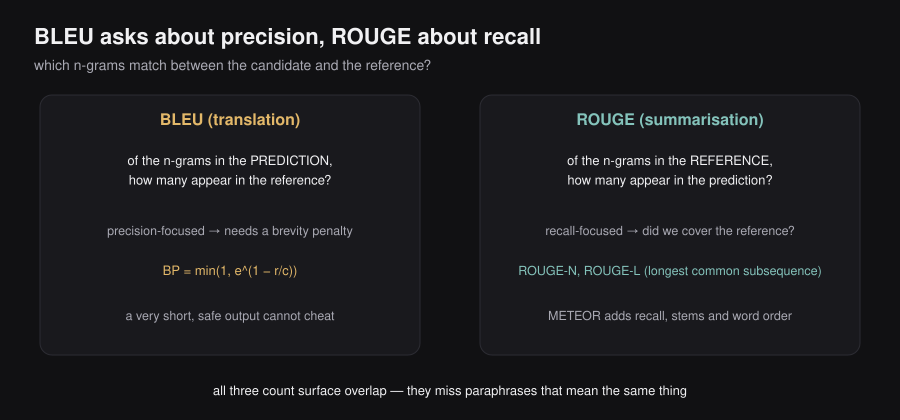
Just like BLEU and METEOR, ROUGE has several variants (ROUGE-L for longest common subsequence, ROUGE-S for skip-bigrams, etc.) — same underlying philosophy of counting overlap, applied slightly differently.
Why Rule-Based Metrics Fall Short
Two limitations, illustrated with one example. Consider these three sentences — all expressing essentially the same idea:
- “A plush teddy bear can comfort a child during bedtime.”
- “Soft stuffed bears often help kids feel safe as they fall asleep.”
- “Many youngsters rest more easily at night when they cuddle a gentle toy companion.”
If sentence 1 is the reference and sentence 3 is the model’s output, BLEU/METEOR/ROUGE will score this very poorly — almost no shared n-grams — despite the meaning being nearly identical. This is limitation #1: no tolerance for stylistic variation (paraphrase-blindness).
Limitation #2: even with all the hand-tuned hyperparameters (, brevity penalty constants, etc.), correlation with actual human judgment remains mediocre. And limitation #3: you still need a human to write the reference text in the first place — you haven’t actually escaped the need for human involvement, just moved it earlier in the pipeline and made it a one-time cost instead of a per-output cost.
This three-part failure — paraphrase-blindness, weak correlation, dependence on references — is exactly what motivates Part III.
10.4 — Part III — LLM-as-a-Judge
The Big Idea: Let an LLM Grade the Output
We’ve spent the previous chapters building LLMs that are pretrained on huge amounts of human-generated text and then tuned (SFT + preference tuning) to match human preferences. That means the LLM has absorbed a great deal of human judgment already. So: why not use an LLM to judge another LLM’s output?
INPUT to the judge: OUTPUT from the judge:
┌─────────────────────────────┐ ┌───────────────────────┐
│ • the original prompt │ ────────► │ • a rationale │
│ • the model's response │ │ • a score │
│ • the grading criteria │ └───────────────────────┘
└─────────────────────────────┘This term — LLM-as-a-Judge — was introduced in a 2023 paper (“Judging LLM-as-a-Judge with MT-Bench and Chatbot Arena,” Zheng et al.) and has since become the dominant way the industry evaluates free-form LLM output at scale. The key output isn’t just a number — it’s a rationale, i.e., natural-language justification for the score. This is the crucial advantage over rule-based metrics: when METEOR gives you 0.31, you have no idea why. When an LLM judge gives you “FAIL — the response never specifies which product to buy, making it unusable for the user’s actual decision,” you know exactly what to fix.
Why rationale before score? This mirrors the reasoning-model insight from Chapter 8: models that externalize a chain of thought before committing to a final answer tend to produce better final answers, because the verbalization process itself lets the model “notice” issues in the response before it has to commit to a verdict.
Guaranteeing Parseable Output: Structured Output
If you naively prompt an LLM with “output a rationale, then a score,” you are not guaranteed to get a response you can reliably parse — the model is sampling from a probability distribution, and its output format is not deterministic.
The fix is a technique you already know from Chapter 5: constrained (grammar-guided) decoding. Recall the idea: at each decoding step, restrict sampling to only the tokens that keep the output consistent with a target grammar or schema (e.g., valid JSON matching a specific object shape). Every major provider exposes this under the name structured output (e.g., passing a text_format / response_format argument bound to a class with fields like rationale: str and score: bool). For LLM-as-a-Judge, you’d typically define something like:
class JudgeResponse:
rationale: str
score: bool # or an enum like {"pass", "fail"}…and pass that schema to the judge call, guaranteeing you always get back something you can parse into (rationale, score) without regex gymnastics or retry loops.
Pointwise vs. Pairwise Judging
There are two broad flavors of LLM-as-a-Judge:
POINTWISE PAIRWISE
┌───────────────┐ ┌───────────────┐ ┌───────────────┐
│ response A │──► Judge ──► pass/fail │ response A │ │ response B │
└───────────────┘ └───────┬───────┘ └───────┬───────┘
└────────┬─────────┘
▼
Judge ──► "A is better" or "B is better"- Pointwise: evaluate a single response in isolation against criteria. Natural fit for ongoing quality monitoring, or grading a single model’s output stream.
- Pairwise: given two responses, which one is better? This is a very natural fit for generating synthetic preference data — recall from Chapter 7 that reward-model training (Bradley-Terry) needs pairs of “preferred vs. dispreferred” responses, and pairwise LLM-as-a-Judge is a cheap way to synthetically manufacture such labels at scale instead of paying humans for every pair.
Three Biases That Break LLM-as-a-Judge
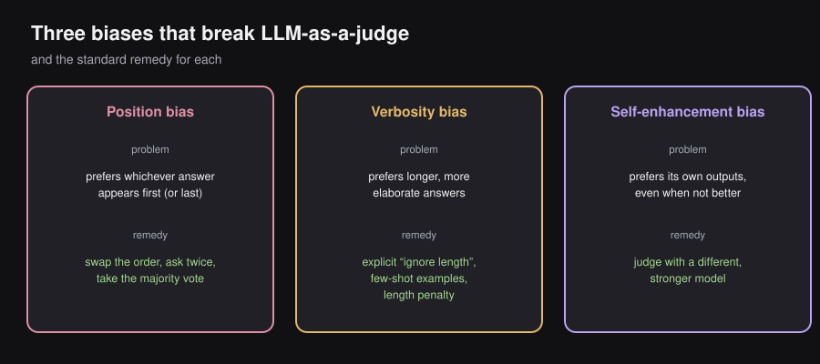
Bias 1: Position bias
If you ask a pairwise judge “is response A or response B better?”, the model may show a systematic preference for whichever response happens to be presented first, independent of actual quality.
Remedy: swap the order and ask twice — once as (A, B), once as (B, A) — and take the majority vote (or average) across both orderings. If the verdict flips depending on order, that’s itself a signal the two responses are close in quality or that the judge is unreliable for this particular pair.
Bias 2: Verbosity bias
Judges tend to systematically prefer longer, more elaborate responses, even when the extra length doesn’t add correctness or usefulness — purely because verbosity looks more thorough.
Remedies (use in combination):
- Make the “ignore length, focus on substance” instruction explicit in the judge prompt.
- Add few-shot in-context examples that demonstrate preferring a shorter, correct response over a longer, padded one.
- Apply an explicit length penalty term when aggregating pointwise scores.
Bias 3: Self-enhancement bias
If a model is asked to judge outputs that it itself generated, it will tend to prefer its own outputs — even when they’re not actually better — likely because a sequence the model itself would generate is, from its own probabilistic standpoint, one it considers “likely,” which subtly correlates with “good” in its internal judgment.
Remedy: use a different model for generation than for judging — ideally, a model with more capacity than the one being evaluated, since a stronger judge is less likely to be fooled by surface fluency that merely resembles its own style. In practice this is hard to fully guarantee, since most frontier models are trained on overlapping data distributions, but a bigger, different model still reduces the risk considerably compared to judging with the exact same checkpoint.
Remark: these three biases are not an exhaustive list — e.g., a judge could simply be miscalibrated relative to genuine human preference on some dimension entirely independent of position, length, or self-preference. Treat position/verbosity/self-enhancement as the three canonical, most-discussed biases, not the only possible failure modes.
Best Practices for a Trustworthy Judge
| Practice | Why |
|---|---|
| Crisp, explicit grading criteria | Reduces subjectivity in what the judge is even trying to measure (same root problem as “Why Human Judgments Disagree: Subjectivity” (Section 10.2), now facing the judge model instead of a human) |
| Binary scale (pass/fail) over graded scales | Removes decision noise; both LLMs and human raters find binary choices easier and more consistent than 5- or 10-point scales |
| Rationale before score | Improves judge quality via the same “verbalize before deciding” mechanism as reasoning models (“The Big Idea: Let an LLM Grade the Output” (Section 10.4)) |
| Calibrate against human ratings periodically | The LLM judge is a proxy for human preference, not a replacement for it. Periodically collect a human-rated sample, compute correlation with judge scores, and use divergences to improve the judge prompt |
| Low temperature (e.g., 0.1–0.2) | Evaluation needs to be reproducible — running the same eval twice, days apart, shouldn’t give wildly different scores |
The single most important meta-point here: do not over-optimize against the judge score itself. The judge is an approximation of what you actually care about (human preference). If you tune your model purely to maximize the judge’s score, you risk the exact same reward-hacking failure mode from Chapter 7 — except now the “reward model” is the judge. This connects directly to Goodhart’s Law, which we’ll return to in “Reading a Real Model Report, the Pareto Frontier, and Goodhart’s Law” (Section 10.7): when a measure becomes a target, it ceases to be a good measure.
10.5 — Part IV — Evaluating Factuality
Decompose, Verify, Aggregate
Factuality deserves its own section because it breaks the “prefer binary scales” guidance from “Best Practices for a Trustworthy Judge” (Section 10.4). A binary “factual / not factual” label is too coarse: a paragraph might be 95% correct with one small error, and calling the whole thing “not factual” throws away useful signal.
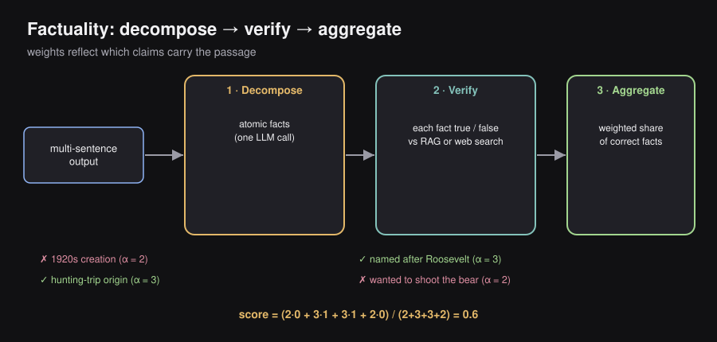
The three-step pipeline used in practice:
Step 1: DECOMPOSE Step 2: VERIFY Step 3: AGGREGATE
┌──────────────────┐ ┌──────────────────┐ ┌──────────────────┐
│ multi-sentence │ LLM │ for EACH fact: │ RAG / │ weighted sum of │
│ text output │──call──► │ is it TRUE (1) │─web ─►│ correct facts / │
│ │ │ or FALSE (0)? │ search │ total weight │
└──────────────────┘ └──────────────────┘ └──────────────────┘Step 1 — Decompose into atomic facts. Use an LLM call to break a passage into a list of discrete, individually checkable factual claims.
Step 2 — Verify each fact. For each atomic fact, check it against a trusted source — this typically reuses the exact RAG and web-search machinery from Chapter 9. Each fact gets a binary correctness label (correct/incorrect) — the “keep it binary” guidance from “Best Practices for a Trustworthy Judge” (Section 10.4) still applies, but now at the level of individual facts rather than the whole passage.
Step 3 — Aggregate with importance weights. Not all facts matter equally. The aggregation formula:
where is the importance weight of fact (all equal to 1 if you don’t want to bother distinguishing importance).
Worked numerical example. Take the passage: “Teddy bears, first created in the 1920s, were named after President Theodore Roosevelt after he proudly wanted to shoot a captured bear on a hunting trip.” This decomposes into four atomic facts:
| # | Fact | Correct? | Weight |
|---|---|---|---|
| 1 | Teddy bears were first created in the 1920s | ✗ (actually ~1902–1903) | 2 |
| 2 | Teddy bears were named after President Theodore Roosevelt | ✓ | 3 |
| 3 | This was connected to a hunting trip | ✓ | 3 |
| 4 | Roosevelt proudly wanted to shoot a captured bear | ✗ (he in fact refused to shoot it) | 2 |
The naming fact (#2) and the hunting-trip context (#3) get higher weight because they’re the load-bearing claims of the sentence; the exact framing of Roosevelt’s attitude (#4) is a lower-stakes embellishment. Plugging in:
A factuality score of 0.6 correctly communicates “this text has real, non-trivial errors, but also gets the most important claims right” — information a single binary label would have completely erased.
10.6 — Part V — Evaluating Agents
Where an Agentic Loop Can Fail: A Taxonomy
Recall from Chapter 9 that a single tool call decomposes into three stages, which can chain into a loop for full agents:
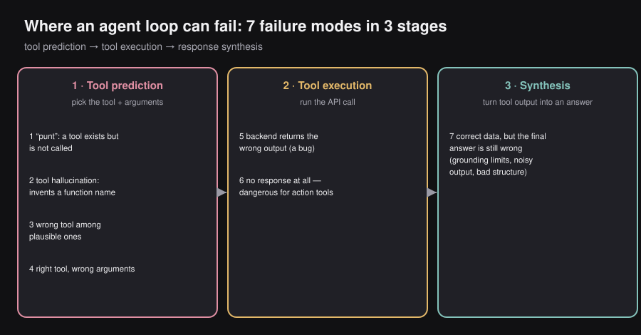
┌─────────────────┐ ┌─────────────────┐ ┌──────────────────┐
│ 1. TOOL │ │ 2. TOOL │ │ 3. SYNTHESIZE │
│ PREDICTION │─────►│ EXECUTION │─────►│ RESPONSE │
│ (pick tool + args)│ │ (run the API call)│ │ (turn tool output │
│ │ │ │ │ into an answer) │
└─────────────────┘ └─────────────────┘ └──────────────────┘Each of these three stages has its own characteristic failure modes — 7 in total across the three stages, cataloged below. The value of this taxonomy is methodical debugging: when an agent misbehaves, first identify which stage failed, then apply the stage-specific remedy, rather than randomly re-prompting.
Tool-Prediction Failures
Failure 1 — The “punt”: a tool exists, but the model doesn’t call it, and just apologizes instead. Two distinct root causes, requiring two distinct fixes:
- Tool router / tool selector dropped the tool before it even reached the prompt — this is a recall error at the routing stage (recall from Chapter 9 that with many available tools, a recall-oriented selector trims the candidate set to save context space). Fix: improve the router’s recall for this query type.
- The tool was present in context, but the model chose not to use it — a training/prompting gap. Fix: add this exact pattern to SFT data, or revise the system prompt to make tool use more salient.
Failure 2 — Tool hallucination: the model invents a function name that doesn’t exist (e.g., calling find_bear when the actual API is find_teddy_bear). Possible causes, roughly in order of what to check first:
- The top-level / horizontal instructions aren’t clear that the model must only use the tools it’s given — fix the system prompt first, since this is the cheapest and most common cause.
- The tool’s name, arguments, or docstring are poorly written / not “model-legible” — rename and re-describe (AI-assisted coding tools are actually a good sanity check here: if an LLM writing code against your API struggles to use it sensibly, so will your agent).
- The base model is simply too weak and doesn’t ground well on instructions in general — last resort, upgrade the model.
Failure 3 — Wrong tool selected among several plausible ones (e.g., user says “find a bear near me” and the model could reasonably respond directly or call a location tool — ambiguous by design, but you wanted a specific behavior). Fix at two levels: (a) the tool router may need better recall for this query pattern, and (b) the tool descriptions themselves need to state precisely which situations they’re scoped to, to disambiguate overlapping tools.
Failure 4 — Right tool, wrong arguments (e.g., calling find_teddy_bear(lat=0, lon=0) — the middle of the South Atlantic — because the model has no idea where the user actually is). Causes and fixes:
- Missing context the model needs (e.g., location) — either inject it directly, or add a dedicated tool (e.g., a location-finder tool) that runs before the main tool call to populate this context. If that upstream tool fails (e.g., permission denied), surface an actionable error to the user rather than silently passing in dummy/placeholder values.
- The model genuinely doesn’t know what value belongs in a given argument — may require retraining on tool-use examples or rewriting the API description.
Tool-Execution Failures
Failure 5 — The tool backend simply returns the wrong output (a software bug — e.g., an unhandled Python ValueError). This is the most “boring” failure category: go fix the tool’s implementation. One subtlety worth flagging: hitting an error is not automatically bad — sometimes an error is the correct, informative signal (e.g., “location permission not granted”), as long as it’s surfaced meaningfully rather than as an opaque failure the model has to guess about.
Failure 6 — The tool returns no response at all, which is especially dangerous for action tools (e.g., “raise the thermostat”). Without any confirmation, the model may hallucinate a false success message (“Done! I’ve raised the thermostat”) when nothing happened. Fix: tools should always return a meaningful structured output, even an empty one — e.g., an empty JSON object {} to mean “ran successfully, found nothing,” which is meaningfully different from returning None, which conveys no information at all about what happened.
Synthesis Failures
Failure 7 — Tool execution succeeded and returned the right data, but the model still fails to produce a correct final answer from it. Three sub-causes:
- The model has a fundamental grounding limitation (rare in modern LLMs, more common in older/weaker ones) — upgrade the model.
- The tool output is too verbose / noisy, and the useful signal (e.g., “found: Teddy, 1 mile away”) is drowned in irrelevant surrounding data — trim the tool’s output to only what’s decision-relevant.
- Even a trimmed output can be presented in a structurally unhelpful way — return well-typed, well-named objects (e.g., a
TeddyBearobject with cleanname,distancefields) instead of raw unstructured text, so the model doesn’t have to parse ambiguous free text to extract what it needs.
Debugging Agents in Practice
The unifying lesson across all seven failure modes: agent debugging has a combinatorial number of possible root causes (model reasoning ability, context relevance, tool-router recall, API/docstring quality, or the tool implementation itself), so the single highest-leverage practice is being methodical: categorize each observed failure into one of the seven buckets above before trying to fix it, and fix failures of the same category together rather than treating every bad trace as a bespoke one-off mystery.
COMMON ROOT-CAUSE THEMES
┌─────────────────────┬─────────────────────┬──────────────────────┐
│ MODEL │ CONTEXT │ TOOL / API │
│ (reasoning/grounding,│ (relevance of what │ (implementation bugs,│
│ too weak, needs │ is in the prompt, │ naming, docstrings, │
│ upgrade) │ missing info) │ argument design) │
└─────────────────────┴─────────────────────┴──────────────────────┘10.7 — Part VI — Benchmarks
Why We Need Standardized Benchmarks
Everything in Parts I–V is about evaluating a single response. But you also need a way to answer the question every model release answers: “how good is this model, overall, compared to others?” That requires a fixed, shared, comparable test — a benchmark. Modern LLM benchmarks generally fall into one of five categories: knowledge, reasoning, coding, safety, and — the newest category — agentic behavior.
Benchmark categories
┌───────────┬───────────┬──────────┬──────────┬───────────┐
│ Knowledge │ Reasoning │ Coding │ Safety │ Agentic │
│ (MMLU) │(AIME, PIQA)│(SWE-bench)│(HarmBench)│ (τ-bench) │
└───────────┴───────────┴──────────┴──────────┴───────────┘A common design principle across (almost) all of these: prefer hard-coded, extractable answers (e.g., “output the final letter A/B/C/D,” or “output a three-digit number”) over free-form grading, because free-form grading re-introduces an LLM-as-a-Judge (or worse, a human) into the loop, which adds its own noise on top of whatever you’re trying to measure about the model under test.
Knowledge Benchmarks: MMLU
MMLU = Massive Multitask Language Understanding (Hendrycks et al., 2020). It covers 57 tasks spanning everyday topics, STEM, law, medicine, humanities, and more. Format: multiple-choice, 4 options per question, extract the model’s chosen letter and compare against ground truth — no judge needed.
MMLU mostly (though not exclusively) measures how well pretraining worked: whether the huge corpus of text the model trained on was actually absorbed into retrievable, applicable knowledge. Questions typically require prior domain knowledge, not pure logical deduction — e.g., a clinical vignette that requires knowing which nerve is likely damaged given a specific injury description, which you can’t derive from first principles; you either learned the relevant medical fact during pretraining or you didn’t.
Reasoning Benchmarks: AIME and PIQA
AIME (American Invitational Mathematics Examination) — a real high-school Olympiad-qualifier math exam. Every problem has an integer answer (typically a 3-digit number between 000–999), making it hard-coded-answer friendly: the model must write out real mathematical reasoning to arrive at the number, so this directly probes chain-of-thought / reasoning quality (this is the exact benchmark used in Chapter 8 to chart GRPO-trained reasoning improvement over training steps).
PIQA (Physical Interaction Question Answering) — tests common-sense reasoning grounded in the physical world, not math. Binary choice (not 4-way like MMLU), ~20,000 examples. Example: “How do I find something I lost on the carpet?” — (a) “vacuum with a solid seal” or (b) “vacuum with a hairnet.” The correct answer, (b), requires understanding that a solid seal blocks airflow entirely (nothing gets picked up), whereas a hairnet lets air (and small lost objects) through while still catching them — a piece of “obvious once you think about it” physical intuition that isn’t really a “knowledge” fact you’d memorize, but isn’t formal logic either.
Coding Benchmarks: SWE-bench
SWE-bench (likely “Software Engineering bench,” though the acronym expansion is left ambiguous in the original paper) is built from real GitHub pull requests on popular Python repositories, specifically PRs that (a) fix a real issue and (b) introduce new tests. This gives you a clean, verifiable before/after: the introduced tests are assumed to fail before the fix and pass after it — i.e., test-driven development turned into an eval harness.
┌─────────────┐ ┌─────────────┐ ┌──────────────────┐
│ Codebase + │──LLM──►│ Patch │──apply──►│ Run introduced │
│ GitHub issue│ │ (model output)│ │ tests: pass/fail?│
└─────────────┘ └─────────────┘ └──────────────────┘This matters for two distinct reasons: (1) AI-assisted coding is one of the most successful current LLM applications, so coding ability is directly user-facing; and (2) even for non-coding use cases, agentic tools (Chapter 9) are frequently implemented in code, so a model’s ability to read/write code well affects how reliably it can invoke and interpret tool calls generally.
Safety Benchmarks: HarmBench
Safety is structurally different from the other benchmark categories: it’s inherently tied to a specific provider’s policy, which is not universal — one company’s threshold for “acceptable” content may differ from another’s. This is exactly why you rarely see safety numbers compared head-to-head across providers in marketing materials the way MMLU or SWE-bench scores are; you have to inspect what the benchmark actually tests to know if the comparison is even meaningful.
HarmBench (likely “Harmful Behavior benchmark”) organizes test cases into four categories:
| Category | Tests |
|---|---|
| Standard | “Vanilla” harmful requests |
| Copyright | Whether the model reproduces copyrighted content |
| Contextual | Harmful requests embedded in a specific (text) context |
| Multimodal | Same idea as contextual, but across non-text modalities |
Grading is not hard-coded here, because harmful outputs are inherently open-ended — you can’t regex-match your way to “was this actually harmful.” HarmBench instead uses a trained classifier to judge success. One especially interesting distinction the paper draws: an attack counts as “successful” if the model attempts the harmful behavior, even if the execution quality is bad — i.e., they deliberately separate “did the model try to comply with a harmful request” from “was the model’s output actually good/dangerous quality,” treating the former alone as the safety failure worth counting.
Agentic Benchmarks: τ-bench and pass^k
τ-bench (“tau-bench,” short for Tool-Agent-User — hence “τ,” pronounced tau) tests full agentic conversations across two domains, airline and retail. Each task gives the agent a set of tools and a set of policies — things it’s allowed and not allowed to do — and a simulated user with a goal (e.g., “change my flight”). Crucially, the user side is also simulated by a separate LLM, because a hard-coded scripted user wouldn’t be able to react coherently to whatever the agent actually does at each turn — the conversation has to be genuinely dynamic. Success is measured by comparing the final database state against the expected goal state (e.g., did the booking actually get changed the way the user wanted).
The pass^k metric — derivation and intuition
Recall pass@k from Chapter 8: the probability that at least one of independent attempts succeeds. τ-bench introduces the complementary metric pass^k (read “pass-hat-k”): the probability that ALL attempts succeed.
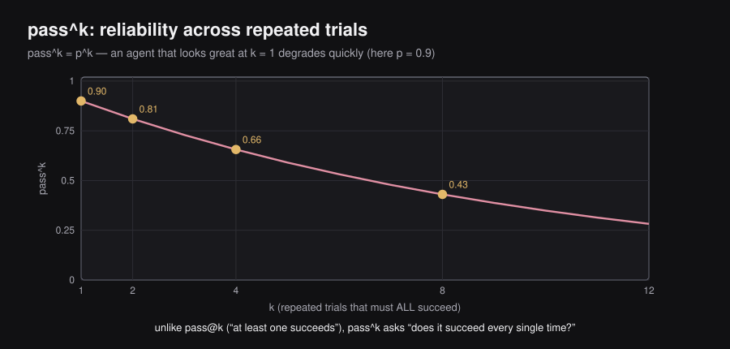
If each individual trial succeeds independently with probability (the pass@1 rate), then:
Why does this matter, and why not just use pass@k? Because for a deployed customer-facing agent, you don’t care whether the agent can eventually succeed given unlimited retries — you care whether it succeeds reliably, every single time a real customer talks to it. pass@k rewards lucky one-off successes; pass^k punishes any inconsistency, which is the property that actually matters for production reliability.
Worked numerical example. Suppose an agent has pass@1 (90% success on a single try). Then:
Even a model that looks excellent at (90%!) drops to 43% reliability across 8 repeated trials of the same underlying task. This exponential decay is precisely why τ-bench’s original paper reported that even strong function-calling models of the time succeeded on <50% of tasks outright, and dropped below 25% pass^8 reliability in the retail domain — a sobering reminder that single-shot accuracy numbers can badly overstate real-world agent reliability.
Reading a Real Model Report, the Pareto Frontier, and Goodhart’s Law
Real model release reports (e.g., a frontier lab’s technical report for a new flagship model) typically report a grid of exactly these benchmark families — reasoning scores on AIME, common-sense on a PIQA variant, coding on a SWE-bench variant, tool-use on a τ-bench variant — sometimes with multilingual extensions of the same underlying benchmark (e.g., a “Global PIQA” testing the same common-sense skill across many languages, rather than English-only).
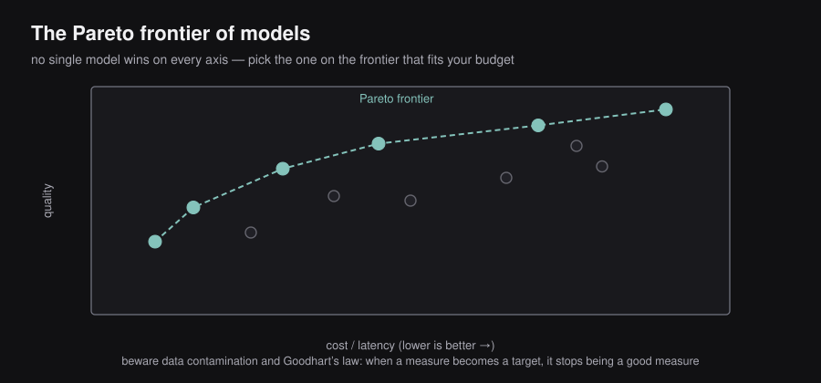
No single model wins on every axis. Different models have different strengths and weaknesses — this is expected and healthy, not a sign that benchmarks are broken. When you plot model performance against a resource axis you care about (commonly: price, but could be latency, safety score, or context length), the set of models that are not dominated by any other model on both axes simultaneously traces out the Pareto frontier — for any point off the frontier, there exists some other model that’s at least as good on both axes.
Two closing cautions when interpreting benchmark numbers:
- Data contamination. A benchmark score is only meaningful if the model hasn’t already seen the exact test items during training. Providers guard against this with techniques like content hashing (to detect scraped benchmark text in training corpora) and blocklisting known benchmark websites during tool-use/web-search training. Math benchmarks have a natural advantage here: you can always write brand-new problems the model provably hasn’t seen.
- Goodhart’s Law: “When a measure becomes a target, it ceases to be a good measure.” Every benchmark in this section is a proxy for real-world usefulness, not usefulness itself. Chasing a specific benchmark number in isolation risks optimizing for the proxy at the expense of the actual goal — the same warning from “Best Practices for a Trustworthy Judge” (Section 10.4) about not over-optimizing against an LLM judge applies at the benchmark level too. Real-world signals like Chatbot Arena (crowd-sourced pairwise human preference at scale) and, ultimately, your own use-case-specific testing remain the final word on whether a model is actually good for you.
10.8 — Part VII — Synthesis
The Grand Analogy: The County Fair Teddy Bear Competition
Imagine a county fair with a teddy-bear-making competition. Every contestant submits a handmade bear, and the fair needs to decide which bears are “good.” This maps onto the entire chapter:
Human evaluation (Part I): At first, the fair hires a panel of local judges to personally inspect and score every single bear. It works, but with 500 entries, judges get tired, and worse — two judges disagree on what “well-made” even means (is a lopsided-but-charming stitch a flaw, or character?). The fair starts tracking judge agreement and holds a pre-fair meeting to align judges on the rubric — exactly the calibration-session fix from “Beyond Two Raters: Fleiss’ Kappa and Krippendorff’s Alpha” (Section 10.2).
Rule-based metrics (Part II): Next year, the fair gets smart: they commission one “reference bear” made by a master craftsperson, and build a checklist — stitch count, symmetry measurements, fabric matched to a reference swatch — so any volunteer can score a bear mechanically without needing craft expertise. This is fast and cheap, but it breaks down immediately for a bear that’s deliberately asymmetric and artistic — it scores badly on the checklist despite being genuinely wonderful. The checklist can’t tell “different” from “worse,” just like BLEU can’t tell “paraphrased” from “wrong.”
LLM-as-a-Judge (Part III): The fair finally hires an expert professional bear-maker as a single judge — someone who has made thousands of bears and genuinely understands quality, and who can explain their score (“docked points for the uneven ear placement, but the fur texture is excellent”). But watch for bias: if this expert judge is asked to rate their own bears alongside others (self-enhancement bias), or always glances at whichever bear is on the left first (position bias), or unconsciously favors the biggest, most elaborate bear regardless of craftsmanship (verbosity bias) — the fair needs safeguards against all three, exactly as in “Three Biases That Break LLM-as-a-Judge” (Section 10.4).
Factuality (Part IV): If a bear comes with a little tag telling its “origin story,” the fair can fact-check the tag sentence-by-sentence — “Handmade in Vermont” (true), “Using 100% organic wool” (false, it’s synthetic) — and weight the important claims (origin, materials) more than throwaway flourishes, giving a nuanced score instead of just “the tag is a lie.”
Agent evaluation (Part V): Some contestants this year are robotic bear-assembly arms (agents!) that select fabric, cut patterns, and stitch autonomously. When an arm fails, the fair’s engineers don’t just shrug — they check: did it grab the wrong fabric (tool prediction failure)? Did the sewing machine jam (tool execution failure)? Did it stitch the right pieces but assemble them in the wrong order (synthesis failure)? Systematic triage, exactly as in “Debugging Agents in Practice” (Section 10.6).
Benchmarks (Part VI): Finally, county fairs across the state agree on a shared national bear competition with standardized categories — a “bear trivia knowledge round” (MMLU), a “solve this stuffing-density puzzle” reasoning round (AIME/PIQA), a “repair this ripped seam” coding-equivalent round (SWE-bench), and a “would this bear be safe near a toddler” safety round (HarmBench) — so that a blue ribbon from Fair A actually means something comparable to a blue ribbon from Fair B.
10.9 — Motivation: Does Self-Attention Care That It’s Looking at Text?
Every mechanism in Chapters 1–10 rests on one operation:
Notice this formula never actually references “words.” It operates on vectors — a query vector, key vectors, value vectors — and computes a weighted combination of values based on similarity between the query and each key. Text tokens happen to be represented as vectors, but so can patches of an image, frames of audio, or nodes of a graph. This raises the natural question that drives the rest of this chapter: if a transformer’s core mechanism doesn’t care what the vectors represent, does the transformer work well on non-text data too?
10.10 — The Vision Transformer (ViT): Adapting the Encoder for Images
The answer, from Dosovitskiy et al.’s 2020 paper “An Image is Worth 16x16 Words: Transformers for Image Recognition at Scale,” is yes — and the recipe follows directly from a mapping you already know:
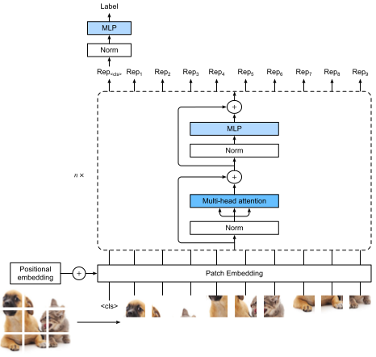
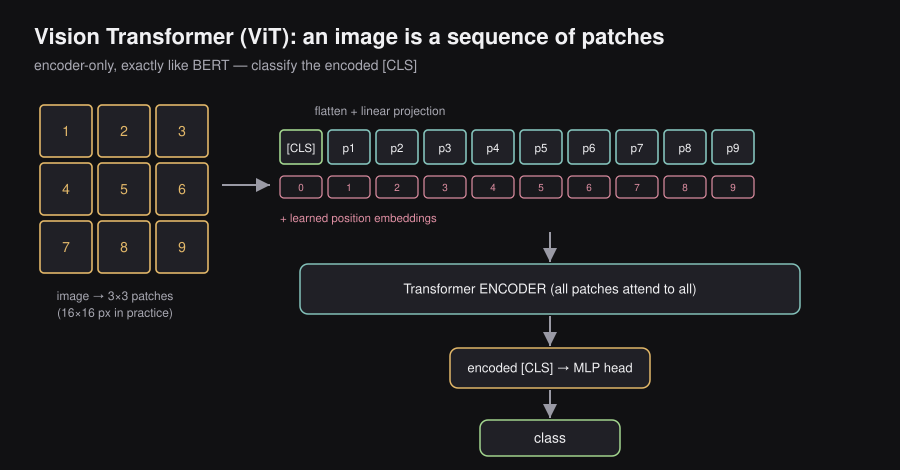
- For classification, you need meaningful embeddings, not autoregressive generation. That’s exactly what the encoder-only family (BERT, from Chapter 4’s taxonomy) is built for.
- So: keep only the encoder, and figure out how to turn an image into a sequence of vectors the way tokenization turns text into a sequence of vectors.
The recipe (Vision Transformer, “ViT”):
Image (H×W×3)
│ split into fixed-size patches (e.g., 16×16 pixels each)
▼
Sequence of patches
│ flatten each patch's pixels, linearly project to embedding dim D
▼
Sequence of patch embeddings ──┐
├── + prepend a learnable [CLS] embedding
├── + add learned position embeddings
▼
Input sequence to the Transformer ENCODER (identical self-attention blocks
to the original Transformer — every patch attends to every other patch)
│
▼
Encoded [CLS] token (has now "seen" every patch via self-attention)
│ feed-forward classification head
▼
Predicted classThis is a direct structural echo of BERT: BERT’s [CLS] token accumulates a representation of the whole sentence through self-attention across all tokens; ViT’s [CLS] token accumulates a representation of the whole image through self-attention across all patches. Position embeddings are still needed (attention itself is permutation-invariant — it has no innate sense of where a patch sits in the image, so, exactly as with text, you have to add that information back in explicitly).
Why this result is notable — inductive bias. Convolutional Neural Networks (CNNs) are built with a strong inductive bias: they scan images with local, sliding filters, which encodes an assumption that nearby pixels matter more directly than far-apart ones (roughly matching how human vision works). A Vision Transformer has almost none of this — every patch can attend to every other patch with equal ease from the very first layer, regardless of spatial distance. The finding: given enough training data, this low-inductive-bias, high-flexibility architecture actually outperforms CNNs. The model learns useful spatial structure from data rather than having it hard-coded in — the same “let the data teach the model, don’t hand-engineer the bias” philosophy that self-attention brought to text in the first place (recall RNNs vs. self-attention in Chapter 2 — self-attention also removed a hand-engineered structural assumption, recurrence, in favor of letting any-token-attends-any-token be learned from data).
10.11 — ViT End to End: A Worked Example
Concretely, walking a single image through the pipeline: suppose the image is divided into a grid of patches (9 patches total, in practice patches are usually far more numerous — this is simplified for illustration).
- Patchify: each of the 9 patches is a small block of pixels (each pixel = 3 values for R, G, B).
- Linear projection: flatten each patch’s raw pixel values into a single long vector, then apply a learned linear layer to project it down into the model’s embedding dimension . This gives 9 patch embedding vectors.
- Prepend
[CLS]: add one more learnable embedding at the front — now 10 vectors total. - Add position embeddings: add a learned positional vector to each of the 10 embeddings, so the model can tell patch 1 (top-left) apart from patch 9 (bottom-right).
- Encoder: run all 10 vectors through the Transformer encoder stack. Self-attention lets every patch influence every other patch’s representation directly — e.g., a patch containing a bear’s ear can directly inform the representation built for a patch containing the bear’s nose, no matter how far apart they are in the image.
- Classify: take the encoded
[CLS]vector (now enriched by attending to all 9 patches) and pass it through a small feed-forward classification head to output class probabilities — e.g., predicting “teddy bear.”
10.12 — Vision-Language Models: Answering Questions About Images
Classification is only half the picture — modern chat interfaces let you upload an image and ask a question about it in natural language. This needs both an image representation (Sections 10.10–10.11) and a text representation (tokens, from Chapter 2), fed into one model that can generate a free-form answer. Two architectural patterns for combining them:
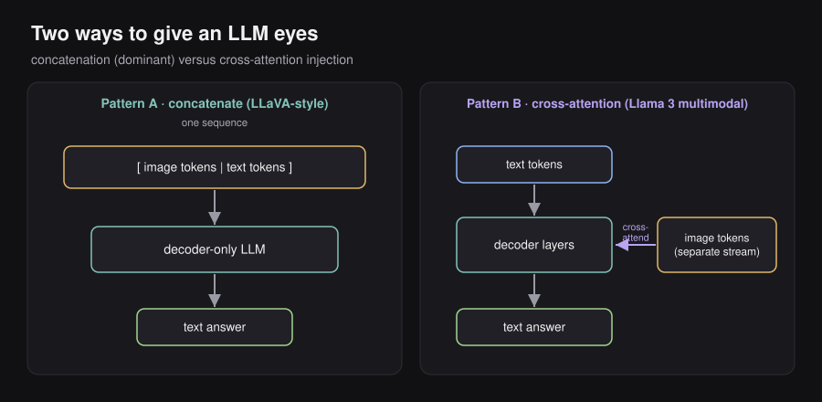
Pattern A — concatenate at the input (dominant approach). Encode the image into a sequence of “image tokens” (using an image encoder, e.g. a ViT-style encoder), concatenate them with the text tokens, and let a standard decoder-only LLM process the combined sequence autoregressively — the model just sees a longer sequence containing both modalities, with a marker distinguishing image tokens from text tokens. This is the approach used by popular open-weight Vision-Language Models (VLMs) such as LLaVA.
Pattern B — inject at cross-attention (less common). Keep the text tokens flowing through the decoder as usual, but let image information enter specifically through a cross-attention layer, rather than being concatenated directly into the input sequence. Llama 3’s paper describes using this approach for its multimodal variant.
PATTERN A (concatenate, e.g. LLaVA) PATTERN B (cross-attention, e.g. Llama 3 multimodal)
┌───────────┬───────────┐ text tokens ──► decoder layers
│image tokens│ text tokens│──► decoder-only │
└───────────┴───────────┘ (one sequence) ▼ (cross-attend to)
image tokens (separate stream)10.13 — Motivation for a New Generation Paradigm: The Autoregressive Bottleneck
Every generation mechanism covered so far — from Chapter 2’s decoder onward — shares one structural property: autoregressive (ARM) generation. Predict token given tokens ; append it; repeat.
x_1 ──► predict x_2 ──► x_1,x_2 ──► predict x_3 ──► x_1,x_2,x_3 ──► predict x_4 ──► ...This has a specific, structural limitation worth being precise about: inference-time generation cannot be parallelized, because predicting strictly requires already having available — you cannot compute two future tokens simultaneously if one depends on the other having already been generated. (Note the careful phrasing: this is specifically an inference-time limitation. Training remains fully parallelizable, since teacher-forcing feeds the entire ground-truth sequence at once, with the causal mask simply preventing each position from attending to future positions — no autoregressive rollout is needed during training itself.)
This inference-time serialization is exactly what motivates looking at a fundamentally different generation paradigm — one borrowed from image generation: diffusion.
10.14 — Diffusion Models, From Images First
Diffusion is easiest to understand in its original domain (image generation), before adapting it to text. The core idea: start from pure noise, and learn to transform it into a realistic image.
Why start from noise at all?
- Generating an image pixel-by-pixel, autoregressively, is intractable — way too many pixels, and pixel-by-pixel doesn’t respect the 2D spatial structure of images well.
- Noise (typically Gaussian) is mathematically extremely well-behaved and trivially easy to sample from.
- Starting from noise naturally provides randomness — you don’t want your generative model to always produce the exact same image for the same prompt.
The Michelangelo framing (a genuinely useful mental model): “The sculpture is already complete within the marble block before I start my work — I just have to chisel away the superfluous material.” A block of rock is like noise: unique, but full of the target statue if you know what to remove. Diffusion models learn precisely this “what to remove” function.
The two-step diffusion process:
FORWARD PROCESS (training time — corrupt the data)
clean image ──► add a little noise ──► add more noise ──► ... ──► pure noise
REVERSE PROCESS (inference time — the model's job)
pure noise ──► predict & remove some noise ──► ... ──► clean imageDuring training, the model repeatedly sees images at varying levels of corruption and learns to predict the noise that was added, so that at inference time it can be run in reverse: start from pure noise and iteratively denoise, step by step, until a clean image emerges.
10.15 — From Noise to Masks: Adapting Diffusion for Discrete Text
Here’s the wrinkle: images are continuous (pixel intensities are real numbers, so “add a little noise” is a well-defined, smooth operation), but text is discrete (tokens are drawn from a finite vocabulary — there’s no continuous notion of “add a little noise” to the word “bear”). So the direct recipe from Section 10.14 doesn’t transfer as-is.
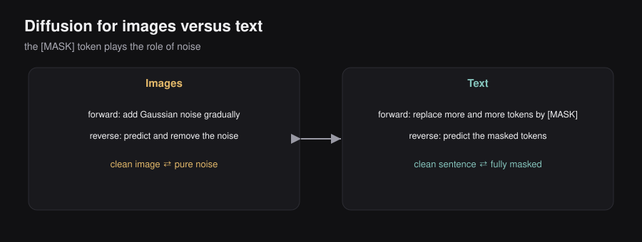
The resolution used by current research: for text, the role that noise plays for images is played by the MASK token.
IMAGES TEXT
Forward: clean image → add noise → noisy image clean sentence → mask some tokens → partially masked sentence
Reverse: noisy image → predict & remove noise masked sentence → predict the masked tokens
→ clean image → clean sentenceForward process (text): instead of gradually adding continuous noise, gradually replace more and more tokens with a special [MASK] token, until the sequence is (in the limit) entirely masked.
Reverse process (text): train a model to look at a partially-masked sequence and predict what the masked tokens originally were — conditioned, at generation time, on a prompt that stays unmasked throughout (exactly analogous to how image diffusion can be conditioned on a text prompt to steer what image emerges from the noise).
This family of models is called Masked Diffusion Models (MDM), and you’ll also see the term DLLM (diffusion-based LLM) used for the same idea. (Note: terminology here is genuinely still settling — don’t be surprised to see slightly different naming conventions across papers.)
10.16 — Masked Diffusion Models in Practice: LLaDA
A concrete, well-documented example: LLaDA (Large Language Diffusion with mAsking), an 8B-parameter model trained entirely from scratch under this masked-diffusion paradigm, whose reported performance is competitive with LLaMA 3 8B — a genuinely autoregressive model of similar scale — showing this isn’t just a theoretical curiosity but a paradigm that scales to real performance parity.
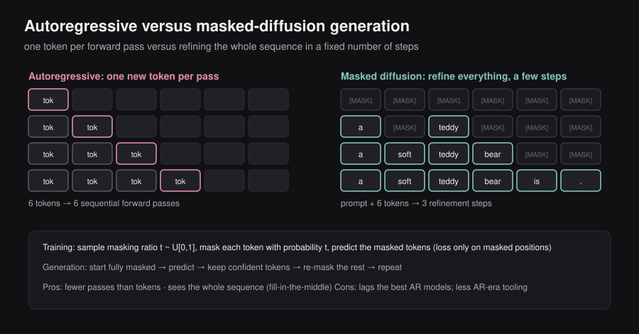
Training objective, more precisely:
- Sample a masking ratio for each training sequence.
- Independently mask each token with probability (so at nothing is masked; at everything is masked — this plays the exact role that a noise-level/timestep schedule plays in image diffusion).
- Train the model to predict the original identity of every masked token, via a cross-entropy loss computed only over the masked positions:
where is the original (clean) sequence, is the sequence after masking at ratio , and is the model’s predicted distribution over the true token given the (partially masked) context. The term upweights harder (more-masked) examples, similar in spirit to weighting schemes in image-diffusion loss functions.
Remark: this is worth comparing carefully to BERT’s masked-language-modeling objective (Chapter 4), which it closely resembles. The key structural difference: BERT uses a fixed masking ratio (typically 15%) purely as a self-supervised pretraining objective to build representations — it isn’t set up as a generative model that can produce a full sequence from scratch. LLaDA’s masking ratio is randomly sampled across the full range every time, which is what lets it be run in reverse, starting from (fully masked) and working down to (fully generated) — turning the same core idea (masked-token prediction) into a genuine generative procedure.
Inference (generation): start from a sequence that is entirely [MASK] tokens (except for the unmasked prompt, which conditions the generation), then iteratively predict tokens for the masked positions and progressively unmask — in multiple passes, refining the whole sequence at once rather than committing to tokens strictly left-to-right.
Prompt: "The best birthday gift for a child is"
Step 0: [P][P][P][P][P] [MASK][MASK][MASK][MASK][MASK]
Step 1: [P][P][P][P][P] [a ][MASK][teddy][MASK][MASK] (partial predictions, still refining)
Step 2: [P][P][P][P][P] [a ][soft ][teddy][bear ][MASK]
Step 3: [P][P][P][P][P] [a ][soft ][teddy][bear ][. ] (fully unmasked)10.17 — Advantages and Current Limitations of Diffusion LLMs
Advantages:
- Speed. Generation needs roughly as many forward passes as there are diffusion steps — a fixed, tunable number — rather than as many forward passes as there are output tokens. Since the number of diffusion steps is typically much smaller than the output length, some reported benchmarks cite speedups on the order of 10× for longer outputs, which matters a lot for latency-sensitive use cases like coding assistants where a user is actively waiting.
- Bidirectional, whole-sequence view. Because the model doesn’t commit to tokens strictly left-to-right, it naturally handles fill-in-the-middle tasks (e.g., “here’s code with a gap in the middle — fill in the gap”) better than a purely left-to-right autoregressive model, since it can condition on context from both directions simultaneously by construction, not as a special-cased workaround.
Current limitations:
- Absolute performance has historically lagged frontier autoregressive models, though the gap has been closing — recent papers report performance approaching parity with similarly-sized autoregressive baselines (as noted for LLaDA vs. LLaMA 3 8B in Section 10.16).
- Much of the tooling built up over the autoregressive era — reasoning-chain training techniques (Chapter 8), specific decoding heuristics (Chapter 5), etc. — doesn’t transfer over automatically and needs its own adapted research effort for the diffusion setting.
A useful intuition pump for why diffusion-style generation might suit text well: when you write something substantial — a speech, an essay — you rarely produce it in one clean left-to-right pass. You sketch a rough outline first (a “drafty” full-document skeleton), then progressively refine each section. Diffusion generation mirrors this coarse-to-fine refinement process directly, rather than mirroring the “improvise one word at a time, never look back” process that autoregressive decoding mirrors.
10.18 — Cross-Pollination Between Text and Vision
The relationship between text and vision research isn’t one-directional — it flows both ways, and the traffic has picked up recently:
Text → Vision: transformers replacing convolutions in diffusion. Image diffusion models traditionally used convolutional architectures for the denoising network. Recent diffusion papers increasingly replace convolutions with transformer blocks instead — a Diffusion Transformer (DiT) — and report better results, mirroring the ViT finding from Section 10.10 (transformers, given enough data, can outperform the historically dominant convolutional inductive bias) but now inside the denoising step of a diffusion pipeline rather than a classification pipeline.
Vision → Text: vision tokens as a text-compression medium. DeepSeek-OCR (“Contexts Optical Compression”) is a striking recent example: despite the name, its point isn’t really about improving OCR — it’s a proof of concept that a small number of vision tokens (i.e., rendering text as an image, then encoding that image) can be decoded back into a much larger number of text tokens by a downstream language model, at compression ratios up to roughly 10× while retaining ~97% decoding precision (dropping to ~60% at a more aggressive 20× compression). The implication some researchers draw: image patches may be a more information-dense representation medium than text tokens for certain kinds of content (the chapter’s example: an emoji conveys in one visual unit what might take several text tokens to describe), suggesting vision-as-compression could become a tool for managing very long contexts or “controlled forgetting” in future LLM memory systems.
Shared low-level tricks: 2D RoPE. RoPE (Section 10.26 / Chapter 3) was originally designed to encode the relative distance between two tokens along a single sequence dimension. In multimodal architectures that mix text and image tokens, this idea generalizes to 2D RoPE, which encodes relative position along two spatial axes (row and column) for image patches, while still reducing to the familiar 1D case for plain text tokens — the same underlying rotation-based mechanism, generalized to a richer notion of “where.”
1D RoPE (text) 2D RoPE (image + text, multimodal)
position: token index along (row, column) grid position for image
a single sequence patches; falls back to 1D for text tokens10.19 — The Architecture Isn’t Finished: Open Design Questions
A theme worth sitting with: the design choices you learned in Chapters 1–4 as “the” Transformer architecture are, in reality, still an active area of iteration — not settled science. A non-exhaustive list of components that are still being actively redesigned across papers, each with a live open debate rather than a single agreed-upon answer:
| Component | The “textbook” choice | What’s being challenged |
|---|---|---|
| Optimizer | Adam / AdamW | Muon — a second-order-inspired optimizer using orthogonalized (spectrum-flattening) updates for higher token efficiency than AdamW. At trillion-parameter MoE scale, plain Muon suffers attention-logit explosion; MuonClip (Muon + a per-head “QK-Clip” that rescales query/key projection weights whenever attention logits exceed a threshold) fixes this — this combination is what let Moonshot AI’s Kimi K2 pretrain a 1-trillion-parameter MoE model on 15.5 trillion tokens with reportedly zero loss spikes across the entire run. |
| Normalization placement | Post-norm (original 2017 paper) | Pre-norm is now standard (Chapter 3) — but even this isn’t the end of the story. |
| Normalization type | LayerNorm | RMSNorm, which drops the mean-centering step and uses fewer learned parameters, is common in modern LLMs — and this axis, too, keeps evolving across new papers. |
| Attention variant | Full multi-head attention | Grouped-Query Attention (Chapter 3) is common, but far from universal — different papers still make different choices about how much key/value sharing to use, and even mix variants across layers within a single model. |
| Activation function | ReLU | GELU and other ReLU-family variants replaced plain ReLU in most LLMs — and new activation functions are still being proposed. |
| Architecture “hyperparameters” broadly | — | Whether to use bias terms at all, number of layers, number of attention heads, feed-forward hidden width — all still vary paper to paper, without full theoretical consensus on optimal settings. |
The unifying takeaway: treat everything in Chapters 1–4 as “the architecture that currently works very well and that you should deeply understand,” not as “the final, provably optimal architecture.” Future breakthroughs plausibly include a genuinely different backbone, not just further tweaks to this one.
10.20 — The Data Problem: Curation, Mid-Training, and Model Collapse
Early LLMs enjoyed a quietly favorable assumption: scraping the open internet mostly got you human-generated text, even if the formatting of that text (forum posts, comment sections) wasn’t polished. That assumption no longer holds — a large and growing fraction of newly-published web content today is itself LLM-generated.
Why this matters — model collapse. Shumailov et al. (Nature, 2024, “AI models collapse when trained on recursively generated data”) showed that indiscriminately training generative models on their own (or other models’) generated output causes a progressive, compounding degradation: the tails of the original data distribution disappear, and successive generations of models trained on this recycled data produce increasingly less diverse, more generic output — a kind of information entropy collapse across model generations, observed not just in LLMs but in variational autoencoders and Gaussian mixture models too, suggesting it’s a fairly general statistical phenomenon, not an LLM-specific quirk.
Why the field isn’t (necessarily) doomed anyway. The practical response has been a shift from “just scrape everything, train next-token-prediction on all of it” toward active data curation — filtering, deduplicating, and quality-scoring at scale. This has produced a new intermediate training stage that didn’t clearly exist as its own phase before: the classic pretrain → fine-tune picture is increasingly pretrain → mid-train → fine-tune, where mid-training still uses a large corpus (much larger than SFT data) but a substantially higher-quality, more curated one than raw-internet pretraining data — a middle ground between “cheap and huge” and “expensive and small.”
OLD: huge, raw internet corpus ──► PRETRAIN ──► SFT ──► preference tuning
NEW: huge, raw internet corpus ──► PRETRAIN ──► large, CURATED corpus ──► MID-TRAIN ──► SFT ──► preference tuning10.21 — The Next Pareto Frontier: Small, Cheap, and Fast
Recall the Pareto frontier concept from Chapter 10 (Section 10.35 of those notes): plotting model quality against a resource axis like price, the frontier is the set of models not dominated on both axes by any competitor. Much of the last few years of published research has pushed hard along the “quality” axis — chase the next benchmark high score. But once a broad swath of practical use cases are already well-served by frontier models, the more interesting remaining frontier shifts toward cost-efficiency at a given quality bar: how cheaply, and how fast, can you deliver a response that’s “good enough” for the task at hand?
This is the underlying force behind the visible industry trend toward Small Language Models (SLMs): purpose-tuned smaller models that trade some raw capability for dramatically better latency and cost, deployed specifically where a frontier-scale model would be overkill. It’s also directly connected to a widely-repeated observation from the chapter: several LLM providers reportedly operate at a loss even on their highest-tier, most expensive plans — a signal that compute cost per query, not just raw model capability, is an increasingly central constraint for the entire industry, not just budget-conscious deployments.
10.22 — Rethinking the Hardware Itself
Every technique in this series so far has treated the underlying hardware as a fixed given — a GPU, which is fundamentally optimized for one thing: matrix multiplication. FlashAttention (Chapter 6) is itself a good example of squeezing more performance out of that fixed assumption by being clever about when and where data moves through GPU memory, rather than changing what the chip fundamentally does.
A more radical direction, a pointer to the idea that the hardware itself might need to change: recent proof-of-concept research has explored encoding transformer-style computation (e.g., aspects of the attention mechanism) directly into analog hardware — using physical properties of analog circuits (e.g., signal summation following circuit laws like Kirchhoff’s current law) to perform certain computations as an intrinsic side effect of the hardware’s physics, rather than as an explicit sequence of digital matrix-multiply instructions. Simulated versions of such designs reportedly show meaningful latency and energy-efficiency gains, precisely because some of the computation is obtained “for free” as a physical side effect rather than paid for as explicit compute steps.
Remark: this is a very early-stage research direction (a recent proof-of-concept, not a deployed technology) — treat it as a pointer to watch, not as an established technique.
10.23 — Where LLM Applications Are Headed
A survey of use cases already reshaped by LLMs, and where the trajectory seems to be pointing next:
- Already mainstream today: AI-assisted coding (agent-mode coding assistants), general-purpose assistants (fact lookup + web browsing, converted into natural language), creativity support (overcoming the “blank page” problem in writing/marketing), and — genuinely underrated — using an LLM as an active learning aid: explaining a concept back to a chatbot mid-lecture is a very effective way to solidify understanding through immediate feedback.
- Actively emerging: converting more and more problems into a text-to-query or text-to-code framing broadly — e.g., generating on-the-fly data visualizations directly from a natural-language description, rather than requiring someone to hand-code a chart.
- Near-future direction — democratizing agentic workflows. Agentic workflows (Chapter 9) currently mostly live in the hands of people who already know how to configure them (engineers, power users). The likely next step is making these workflows accessible via natural language alone, with no code, to non-technical everyday users.
- Further out — AI-assisted browsing and OS-level agents. Products like agentic browsers point toward LLMs operating at a much more “macroscopic” level than one-off chat turns — navigating whole websites, or eventually whole operating systems, on a user’s behalf. This raises a genuinely new security surface: a malicious actor could inject hidden instructions into a webpage that an agentic browser reads, attempting to hijack the agent’s actions (a prompt injection attack) or exfiltrate the user’s data. Just as HTTPS became the trust signal for “this connection is secure,” the field will likely need an analogous trust signal for “this site is safe for an AI agent to act on autonomously.”
- A meaningful bar for how far we’ve come: whether AI-driven customer service genuinely feels good to interact with, rather than something users try to escape as fast as possible toward a human. One way to frame it: human interaction carries dimensions of value — empathy, groundedness — that aren’t fully captured by anything currently written into a system prompt, which is precisely why this remains a hard, unsolved bar rather than a solved one.
10.24 — Open Problems the Current Paradigm Hasn’t Solved
Several genuinely open research questions, explicitly named as open rather than presented with confident answers:
- Continuous learning. Current LLMs have their weights fixed after training; RAG and tool calling (Chapter 9) are workarounds that let a fixed-weight model access fresh information, but the model itself doesn’t durably learn from new experience the way the workaround might suggest. Whether there’s a practical path to a system whose weights genuinely keep learning post-deployment remains open.
- “Hallucination,” reconsidered. The chapter deliberately places this word in quotation marks: since an LLM is trained to predict the statistically likely next token, not to map its statements to verified facts, producing a fluent-but-false statement isn’t really a malfunction relative to that training objective — it’s closer to an expected consequence of what the objective actually optimizes for. This reframes “eliminate hallucination” as a harder problem than “fix a bug” — it may require rethinking the training objective itself, not just patching the model post-hoc.
- Personalization, interpretability, and safety are each explicitly named as open, active, unsolved problem areas in their own right — not niche side-topics, but central open questions for the field going forward.
10.25 — How to Keep Learning
A recommended toolkit for staying current:
- arXiv — where nearly all of this research first appears, often well before formal peer review.
- Conference venues (e.g., NeurIPS) — a good curated lens onto which papers the field currently considers most significant.
- Read the code, not just the paper. Most papers today ship a real code release alongside the write-up — treat the implementation as part of understanding the method, not an optional extra.
- Hugging Face’s trending papers page — effectively the modern successor to the older “Papers with Code” site, a good day-to-day pulse-check.
- Social platforms (X/Twitter) — a large, active research community discusses new results here often faster than any formal write-up.
- YouTube deep-dive explainers — Yannic Kilcher (an early, thorough explainer of the original Transformer paper back in 2017) and Andrej Karpathy (former university-based educator, widely regarded as one of the best at making these concepts genuinely learnable) are both specifically called out.
- Company research blogs — frontier labs regularly publish accessible technical writeups alongside formal papers.
10.26 — Series Recap · Act I: Building the Transformer (Chapters 1–4)
The series opens with a problem: how do you get a neural network to process text at all? The answer builds up in four layers:
Raw text
│ TOKENIZATION (subword-level: reuses shared roots across words)
▼
Token IDs
│ EMBEDDING (word2vec-style prediction proxy tasks → later, learned end-to-end)
▼
Static vectors
│ PROBLEM: not context-aware — same word, same vector, in any sentence
▼
RNNs (recurrent processing, one token at a time, carries a running hidden state)
│ PROBLEM: long-range dependencies decay — early tokens get "forgotten"
▼
SELF-ATTENTION: every token can directly attend to every other token,
regardless of distance — no decay, no recurrence bottleneck
│
▼
softmax(QK^T / √d_k) · V (the one equation the entire course is built on)
│
▼
THE TRANSFORMER (2017): encoder + decoder, built entirely from self-attention
blocks, originally demonstrated on machine translationChapter 3 then asks: what’s changed about this architecture since 2017? Three concrete evolutions, all still standard today:
- Absolute → relative positions: instead of adding a fixed per-position embedding, RoPE (Rotary Position Embeddings) rotates the query and key vectors as a function of position, so the self-attention score ends up depending only on the relative distance between two tokens — exactly the quantity that matters for attention, computed right where attention happens.
- Full multi-head attention → Grouped Query Attention (GQA): share key/value projection matrices across groups of heads instead of learning one full set per head, trading a little expressiveness for a lot of efficiency.
- Post-norm → pre-norm: move the normalization layer to before each sub-layer rather than after, improving training stability at scale.
And finally: keep only the encoder → get BERT-style contextual embeddings (great for classification via the CLS token, can’t generate text). Keep only the decoder → get GPT-style autoregressive generation. Keep both → get T5-style sequence-to-sequence models. This three-way split (encoder-only / decoder-only / encoder-decoder) is the taxonomy that everything else in the series sits inside.
10.27 — Series Recap · Act II: Turning a Transformer into an LLM (Chapters 5–7)
A modern LLM is specifically the decoder-only branch of that taxonomy, scaled way up, trained to predict the next token. Three big questions had to be answered to make this practical:
“Do you need to run the whole model for every input?” → No: Mixture of Experts replaces a single dense feed-forward network with many expert feed-forward networks plus a token-level gating/routing mechanism that sparsely activates only a subset per token — letting total parameter count grow without proportionally growing compute per token, and letting experts be physically distributed across different hardware.
“How do you turn a probability distribution into an actual sequence of tokens?” → Decoding strategies: greedy decoding (always take the argmax — deterministic but low-diversity) vs. sampling (introduces randomness, controlled by temperature — low temperature sharpens the distribution toward greedy-like determinism, high temperature flattens it toward more uniform/creative sampling).
“How do you actually train something this big?” → Two separate sub-questions:
- How big should it be, relative to how much data you have? Scaling laws showed most early large models were undertrained relative to their size — the empirical rule of thumb that emerged: train on roughly 20× as many tokens as parameters.
- How do you fit the computation on real hardware? FlashAttention exploits the GPU memory hierarchy (big-but-slow HBM vs. small-but-fast SRAM), minimizing HBM reads/writes by tiling the computation to fit in SRAM — an exact method (no approximation), plus a recompute-instead-of-store trick that trades extra FLOPs for less memory traffic, netting an overall speedup. Data parallelism (split data across GPUs) and model parallelism (split a single forward pass across GPUs) address the “it doesn’t fit on one GPU” problem from a different angle.
This full pipeline (huge, mostly-unlabeled corpus → next-token prediction) is pretraining, and it produces a model that can autocomplete fluently but isn’t yet helpful — it will complete your question with more questions rather than answer it. Supervised Fine-Tuning (SFT) on curated input-output pairs is what teaches the model the desired behavior (how to actually be an assistant), using techniques like LoRA/QLoRA to fine-tune efficiently by only training small low-rank adapter matrices instead of the full parameter set.
10.28 — Series Recap · Act III: Alignment and Reasoning (Chapters 7–8)
SFT teaches the model what to do, but not what not to do. Preference tuning (Chapter 7) fixes this using pairwise preference data (“this response is better than that one”), formalized via the Bradley-Terry model:
A reward model is trained on this pairwise objective, then used to steer the policy (the LLM) via reinforcement learning — the LLM is reframed as an RL policy: state = prompt-so-far, action = next token, reward = the trained reward model’s score on the completed rollout. PPO was the dominant algorithm for this, optimizing a reward term regularized by a KL penalty (don’t drift too far from the SFT base model — the base model is already good, and this guards against reward hacking, where the LLM exploits blind spots in an imperfect reward model rather than genuinely improving).
Chapter 8 extends this same RL machinery toward reasoning: teach the model to output a deliberation chain before its final answer. GRPO became the dominant algorithm for this because (a) it drops PPO’s separate value model entirely — instead of a learned baseline, it samples a group of completions for the same prompt and computes advantages relative to that group, and (b) it’s a great fit for domains with a verifiable reward (e.g., math — you can just check the final numeric answer against ground truth), which means you don’t even need a trained reward model at all: just the policy and a reference model. Known failure mode: GRPO’s normalization can incentivize longer-and-longer incorrect answers over time (penalized less per-token than short incorrect ones), motivating fixes like GRPO Done Right and DAPO.
10.29 — Series Recap · Act IV: Connecting to the World and Measuring It (Chapters 9–10)
A model that only knows what was baked into its weights during pretraining is stuck at its knowledge cutoff and can’t take real-world action. Chapter 9 breaks it out of that box with RAG (retrieve relevant documents via a two-stage bi-encoder-then-cross-encoder pipeline, then inject them into the prompt) and tool calling (give the model a catalog of callable functions; it picks one + arguments, you execute it, you feed the result back). Agents compose both of these into a loop (the ReAct pattern: observe → plan → act, repeated), letting a model take multiple actions toward a goal rather than a single shot.
Chapter 10 then asks the question that makes all of the above trustworthy: how do you know any of this actually works well? Human ratings are the gold standard but too slow/expensive and need chance-corrected agreement metrics (Cohen’s Kappa) to even trust the humans. Rule-based metrics (BLEU/ROUGE/METEOR) are fast but paraphrase-blind. LLM-as-a-Judge is the modern default — with known biases (position, verbosity, self-enhancement) that need explicit mitigation. Agent-specific evaluation needs its own failure-mode taxonomy (tool prediction vs. execution vs. synthesis). And benchmarks (MMLU, AIME, PIQA, SWE-bench, HarmBench, τ-bench) standardize all of this into the numbers you see in every model release — with the caveat that they’re proxies, and Goodhart’s Law is always lurking.
THE FULL ARC, ONE LINE PER CHAPTER
Ch 1–2: text → tokens → embeddings → self-attention → the Transformer
Ch 3–4: relative positions (RoPE), grouped attention (GQA), pre-norm, 3 model families
Ch 5: sparse compute (MoE) + how to sample the next token (decoding, temperature)
Ch 6: scaling laws + hardware-aware training (FlashAttention, parallelism) → pretrain → SFT
Ch 7: teach what NOT to do — preference tuning, reward models, PPO, reward hacking
Ch 8: teach deliberation — reasoning models, GRPO, verifiable rewards
Ch 9: give it hands — RAG, tool calling, agents (ReAct)
Ch 10: give it a ruler — human eval, rule-based metrics, LLM-as-a-Judge, benchmarks
Ch 10: (frontier) zoom out: other modalities, other generation paradigms, what's next10.30 — Cheat Sheet — Evaluation
Human evaluation
- Ideal but impractical: too slow, too expensive, and raters may disagree (subjective rubric).
- Chance agreement (2 raters, binary): .
- Cohen’s Kappa: . perfect, chance-level, worse than chance.
- Extensions: Fleiss’ Kappa (>2 raters), Krippendorff’s Alpha (any scale, missing data).
Rule-based reference metrics
- METEOR , , Penalty (rewards contiguous, ordered matches).
- BLEU — precision-only + brevity penalty to punish overly-short outputs.
- ROUGE — recall-oriented n-gram overlap, common for summarization.
- Shared weakness: no tolerance for paraphrase, weak human correlation, still reference-dependent.
LLM-as-a-Judge
- Inputs: prompt + response + criteria. Outputs: rationale + score (usually binary).
- Guarantee parseable output via structured output / constrained decoding.
- Pointwise (grade one response) vs. Pairwise (compare two — useful for synthetic preference data).
- Biases: position (swap + vote), verbosity (explicit instructions, few-shot, length penalty), self-enhancement (use a different, ideally bigger, judge model).
- Best practices: crisp criteria, binary scale, rationale-before-score, calibrate vs. humans, low temperature (~0.1–0.2).
Factuality
- Pipeline: decompose → verify (binary per fact, via RAG/search) → weighted aggregate.
- .
Agent evaluation — 7 failure modes
- Tool prediction: punt (no call), tool hallucination, wrong tool, wrong arguments.
- Tool execution: wrong output (bug), no output (silent action failure).
- Synthesis: fails to use correct tool output correctly (grounding / noisy output / unstructured output).
Benchmarks
- Knowledge → MMLU (57 tasks, 4-choice MCQ).
- Reasoning → AIME (math, numeric answer), PIQA (physical common sense, binary choice).
- Coding → SWE-bench (real GitHub PRs + tests, before/after patch).
- Safety → HarmBench (4 categories: standard, copyright, contextual, multimodal; classifier-graded, provider-policy-dependent).
- Agentic → τ-bench (airline/retail, simulated user, policy-following) + pass^k (all--succeed reliability, decays exponentially).
- Watch for: data contamination, Goodhart’s Law, Pareto frontier across models × resource axis (e.g. price).
10.31 — Cheat Sheet — Trending Topics
Trending topics
- ViT: image → patches → linear-project → +[CLS] +position → Transformer encoder → classify [CLS]. Low inductive bias, wins with enough data.
- VLMs: concatenate image+text tokens into one decoder-only sequence (LLaVA-style) OR inject image info via cross-attention (Llama 3-style).
- AR bottleneck: inference-time generation is inherently sequential (training is still parallelizable via teacher forcing).
- Diffusion (images): forward = add noise; reverse = learn to denoise, starting from pure noise.
- Diffusion (text / MDM / DLLM): mask token stands in for noise. Forward = mask more and more tokens (); reverse = predict all masked tokens, iteratively refine. Loss only on masked positions, weighted by . Example: LLaDA (8B, competitive with LLaMA 3 8B).
- Diffusion LLM pros: fewer forward passes than tokens generated (speed, ~10× reported), naturally bidirectional (great at fill-in-the-middle). Cons: still catching up to frontier AR models on raw quality; less mature tooling (reasoning-chain training, decoding heuristics don’t transfer automatically).
- Cross-pollination: DiT (transformers replace convolutions in image diffusion denoisers), DeepSeek-OCR (vision tokens as compressed text representation, ~10× compression at ~97% precision), 2D RoPE (relative position generalized to a 2D grid for image patches).
- Open architecture questions: optimizer (Adam vs. Muon/MuonClip — used at trillion-parameter scale in Kimi K2), norm type (LayerNorm vs. RMSNorm) and placement (pre vs. post), attention variant (GQA and beyond), activation function (ReLU-family still evolving).
- Data: model collapse (Shumailov et al., Nature 2024 — recursive training on synthetic data degrades diversity); response = data curation + a new mid-training stage (pretrain → mid-train → SFT).
- Efficiency frontier: Small Language Models (SLMs), cost/latency as the next Pareto axis beyond raw quality.
- Hardware: FlashAttention as memory-hierarchy-aware engineering on existing GPUs; early-stage analog-computing proof-of-concepts as a more radical rethink.
- Applications trajectory: coding assistants → general assistants → creativity/learning aid → text-to-viz → democratized no-code agentic workflows → agentic browsing/OS-level agents (new prompt-injection security surface) → the “would you rather talk to a human” bar for customer service.
- Open problems: continuous learning, “hallucination” as a byproduct of the next-token objective rather than a simple bug, personalization, interpretability, safety.
10.32 — Glossary — Evaluation
- Agreement Rate — the raw proportion of items on which two raters give the same label; uninformative on its own because it doesn’t correct for chance.
- AIME — American Invitational Mathematics Examination; used as an LLM reasoning benchmark due to its hard, numerically-answered problems.
- Bradley-Terry model — (Chapter 7 callback) a formulation for modeling pairwise preference probabilities, often trained using labels that pairwise LLM-as-a-Judge can generate synthetically.
- Brevity Penalty (BP) — a multiplicative penalty in BLEU that punishes candidate translations shorter than the reference, preventing precision-gaming via overly short outputs.
- Chatbot Arena — a crowd-sourced, large-scale pairwise human preference platform used as a real-world sanity check against benchmark scores.
- Cohen’s Kappa (κ) — a chance-corrected inter-rater agreement metric for two raters on categorical labels: .
- Data Contamination — when benchmark test items (or near-duplicates) leaked into a model’s training data, inflating its benchmark score without reflecting true capability.
- Factuality Score — a weighted-average aggregation of per-fact correctness labels used to grade multi-claim text more granularly than a single binary label.
- Fleiss’ Kappa — generalization of Cohen’s Kappa to more than two raters.
- Goodhart’s Law — “when a measure becomes a target, it ceases to be a good measure”; a caution against over-optimizing directly against any proxy metric (judges, benchmarks, reward models).
- HarmBench — a safety benchmark with four categories (standard, copyright, contextual, multimodal), graded via a trained classifier rather than exact-match.
- Inter-rater Agreement — the degree to which independent human raters give consistent labels; low agreement signals an under-specified or inherently subjective rubric.
- Krippendorff’s Alpha — a general-purpose chance-corrected agreement metric supporting any number of raters, any measurement scale, and missing data.
- LLM-as-a-Judge — using an LLM to grade another LLM’s output, typically producing a rationale and a score given the prompt, response, and grading criteria.
- METEOR — Metric for Evaluation of Translation with Explicit ORdering; combines a precision/recall F-score with an explicit word-order penalty.
- MMLU — Massive Multitask Language Understanding; a 57-task, 4-choice multiple-choice knowledge benchmark.
- Model Collapse (not this chapter, forward pointer) — n/a here; see the model-collapse discussion later in this chapter.
- Pairwise Judging — LLM-as-a-Judge setup comparing two responses to determine which is better; useful for generating synthetic preference-pair data.
- Pareto Frontier — the set of models not dominated on both axes simultaneously (e.g., quality vs. price) by any other model.
- pass@k — probability that at least one of independent attempts succeeds.
- pass^k (“pass-hat-k”) — probability that ALL independent attempts succeed; under independence; decays exponentially, exposing reliability gaps.
- PIQA — Physical Interaction Question Answering; a binary-choice common-sense reasoning benchmark grounded in everyday physical situations.
- Pointwise Judging — LLM-as-a-Judge setup grading a single response in isolation.
- Position Bias — an LLM judge’s tendency to favor whichever option is presented first (or in a particular slot), independent of true quality.
- Rationale — the natural-language justification an LLM judge produces alongside its score; a key advantage over rule-based metrics, and improved by ordering it before the score.
- ROUGE — Recall-Oriented Understudy for Gisting Evaluation; recall-focused n-gram overlap metric, common for summarization.
- Self-Enhancement Bias — an LLM judge’s tendency to favor outputs generated by itself (or similar models), independent of true quality.
- Structured Output — provider-level feature that uses constrained/grammar-guided decoding (Chapter 5) to guarantee a model’s output matches a target schema.
- SWE-bench — a coding benchmark built from real GitHub PRs with introduced tests, grading whether a model’s patch makes the tests pass.
- τ-bench (tau-bench) — Tool-Agent-User benchmark; simulates dynamic multi-turn conversations between an LLM-simulated user and an agent under domain policies, across airline and retail domains.
- Verbosity Bias — an LLM judge’s tendency to favor longer, more elaborate responses regardless of whether the added length improves correctness or usefulness.
10.33 — Further Reading — Evaluation
On agreement and human evaluation
- Cohen, J. (1960). A Coefficient of Agreement for Nominal Scales. — the original Cohen’s Kappa paper.
- Fleiss, J. L. (1971). Measuring Nominal Scale Agreement Among Many Raters.
- Krippendorff, K. Content Analysis: An Introduction to Its Methodology — standard reference for Krippendorff’s Alpha.
On rule-based reference metrics
- Papineni, K. et al. (2002). BLEU: a Method for Automatic Evaluation of Machine Translation.
- Banerjee, S. & Lavie, A. (2005). METEOR: An Automatic Metric for MT Evaluation with Improved Correlation with Human Judgments.
- Lin, C.-Y. (2004). ROUGE: A Package for Automatic Evaluation of Summaries.
On LLM-as-a-Judge
- Zheng, L. et al. (2023). Judging LLM-as-a-Judge with MT-Bench and Chatbot Arena — the paper that coined and popularized the term.
On benchmarks
- Hendrycks, D. et al. (2020/2021). Measuring Massive Multitask Language Understanding — MMLU.
- Bisk, Y. et al. (2019/2020). PIQA: Reasoning about Physical Commonsense in Natural Language.
- Jimenez, C. E. et al. (2023). SWE-bench: Can Language Models Resolve Real-World GitHub Issues?
- Mazeika, M. et al. (2024). HarmBench: A Standardized Evaluation Framework for Automated Red Teaming and Robust Refusal.
- Yao, S. et al. (2024). τ-bench: A Benchmark for Tool-Agent-User Interaction in Real-World Domains — introduces pass^k.
Closing thought. Notice the throughline across the whole series: Chapters 1–4 gave the LLM a body (architecture), Chapters 5–6 gave it scale and speed (LLMs, inference, pretraining), Chapter 7 gave it values (preference tuning), Chapter 8 gave it deliberation (reasoning), Chapter 9 gave it hands (tools/agents) — and this chapter gives you the ruler to measure all of the above, honestly and without fooling yourself. That ruler — human calibration, rule-based metrics, LLM-as-a-Judge, factuality decomposition, agent failure taxonomies, and standardized benchmarks — is what turns “I made a change and it feels better” into “I made a change and I can prove it’s better, and I know exactly along which dimension.”
10.34 — Glossary — Trending Topics
- Analog Hardware (for LLM compute) — an early-stage research direction encoding transformer-style computation directly into analog circuit physics, aiming to obtain parts of the computation “for free” as a physical side effect rather than as explicit digital matrix-multiply steps.
- Cross-Attention (multimodal injection) — an architectural pattern (e.g., in Llama 3’s multimodal variant) where image information enters a decoder-only model through a dedicated cross-attention layer rather than being concatenated directly into the input token sequence.
- DeepSeek-OCR — a model demonstrating that a small number of “vision tokens” (rendering text as an image, then encoding it) can be decoded into many more text tokens at high compression ratios, suggesting vision-as-compression as a tool for long-context / memory management.
- DiT (Diffusion Transformer) — an image diffusion model whose denoising network is built from Transformer blocks rather than convolutions, mirroring the ViT finding in a different part of the image-generation pipeline.
- Fill-in-the-Middle — a task requiring a model to generate content conditioned on context on both sides of a gap; a natural strength of bidirectional/diffusion-style generation relative to strictly left-to-right autoregressive decoding.
- Inductive Bias — a structural assumption built into an architecture (e.g., CNNs’ local sliding-filter assumption) that steers the model toward certain solutions; Vision Transformers deliberately have very little of this, relying on data volume instead.
- LLaDA — Large Language Diffusion with mAsking; an 8B-parameter masked diffusion language model trained from scratch, reported to be competitive with LLaMA 3 8B.
- LLaVA — a popular open-weight Vision-Language Model that concatenates encoded image tokens with text tokens into a single decoder-only input sequence.
- Masked Diffusion Model (MDM) / Diffusion LLM (DLLM) — a text generation paradigm adapting image diffusion to discrete tokens by using the mask token in place of continuous noise; generates via iterative, parallel-refinement unmasking rather than strict left-to-right decoding.
- Mid-Training — an intermediate training stage (between pretraining and SFT) using a large but substantially more curated/higher-quality corpus than raw pretraining data.
- Model Collapse — the progressive, compounding loss of distributional diversity that results from recursively training generative models on model-generated data (Shumailov et al., Nature 2024).
- Muon / MuonClip — Muon is a second-order-inspired, orthogonalized-update optimizer more token-efficient than AdamW but prone to attention-logit explosion at large scale; MuonClip adds a per-head “QK-Clip” rescaling mechanism to fix this, enabling stable trillion-parameter-scale training (e.g., Kimi K2).
- Pareto Frontier (efficiency) — (Chapter 10 callback, reapplied here) the set of models not dominated on both quality and cost/latency simultaneously; the “next frontier” the field is increasingly optimizing for beyond raw benchmark quality.
- Patch Embedding — the linear projection of a flattened image patch’s raw pixel values into a model’s embedding dimension, forming ViT’s analog of a token embedding.
- Prompt Injection (web/agentic context) — hidden instructions embedded in untrusted content (e.g., a webpage) designed to hijack an autonomous agent’s behavior without the user’s knowledge or consent.
- RMSNorm — a normalization variant that skips mean-centering and uses fewer parameters than LayerNorm; common in modern LLMs as one instance of ongoing architectural iteration.
- Small Language Model (SLM) — a smaller, typically purpose-tuned model traded off against a frontier-scale model to optimize for cost and latency rather than maximum raw capability.
- 2D RoPE — a generalization of Rotary Position Embeddings that encodes relative position along two spatial axes (e.g., row and column of an image patch grid) instead of a single sequence dimension, while still reducing to standard 1D RoPE for text tokens.
- Vision-Language Model (VLM) — a model that jointly processes image and text input to answer questions or generate text about visual content, via either input-concatenation (LLaVA-style) or cross-attention injection (Llama 3-style).
- Vision Transformer (ViT) — an encoder-only Transformer applied to images by splitting them into patches, linearly projecting each into an embedding, prepending a CLS token, adding position embeddings, and classifying from the encoded CLS representation.
10.35 — Further Reading — Trending Topics
On transformers beyond text
- Dosovitskiy, A. et al. (2020/2021). An Image is Worth 16x16 Words: Transformers for Image Recognition at Scale — the original ViT paper.
- Liu, H. et al. (2023). Visual Instruction Tuning — LLaVA.
- The Llama 3 technical report (2024), for its multimodal cross-attention design.
On diffusion and diffusion LLMs
- Nie, S. et al. (2025). Large Language Diffusion Models — the LLaDA paper.
- Peebles, W. & Xie, S. (2023). Scalable Diffusion Models with Transformers — DiT.
- Wei, H. et al. (2025). DeepSeek-OCR: Contexts Optical Compression.
On architecture and data still evolving
- Moonshot AI (2025/2026). The Kimi K2 technical report — MuonClip, QK-Clip, and trillion-parameter MoE training stability.
- Shumailov, I. et al. (2024). AI Models Collapse When Trained on Recursively Generated Data. Nature, 631, 755–759.
On staying current after this series
- arXiv (arxiv.org) — where nearly everything above first appears.